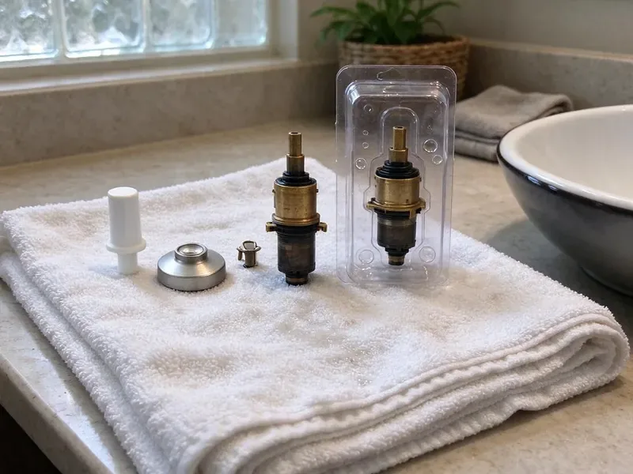

Shower Installation in Winooski, VT
Refresh your bathroom with a new shower installed by CKV Plumbing, your trusted plumbers in Winooski, VT.
- Prompt, Reliable Service
- Fast Local Service
- Upfront Pricing
- Licensed, Insured Plumbers
Professional Shower Installation in Winooski, VT.
Our team is ready to help you choose and install the perfect shower for your home.
Complete Shower Installation Plumbing in Winooski, VT
When you need new shower installation in Winooski, VT, CKV Plumbing is the team to call. We work with various shower designs, including standard tubs with showers, walk-in units, and custom tile showers, providing proper water pressure and drainage.
Our expertise includes:
- Precision fitting for all shower types
- Handle complex plumbing rough-ins for new showers
- Multi-head, body spray and rain shower plumbing layouts

Additional Bathroom Plumbing Services in Winooski, VT
From toilets to showers, our bathroom plumbing team in Winooski, VT repairs, installs, and replaces every fixture with clean, code-compliant work.


Customers
Why Choose CKV Plumbing for Shower Installation in Winooski, VT?
Choosing the right plumber for shower installation ensures proper water flow and prevents future leaks, which matter in any climate. Our team delivers installations that stand up to daily use and local water conditions.
- Local Expertise, Our plumbers are familiar with Winooski building styles and common plumbing setups, ensuring tailored solutions.
- Quality Materials, We use only high-grade plumbing components designed for long life and performance in local water conditions.
- Clean Work, Our team maintains a tidy workspace and cleans up thoroughly after every shower installation.
Citywide Coverage
Wherever your project is in Winooski, our plumbers show up on schedule with the valves and fittings needed. We keep remodels moving without plumbing holdups.
Experienced Team
The CKV Plumbing team brings years of hands-on experience to every shower installation job. We understand the challenges and requirements of plumbing systems in Vermont homes, ensuring a smooth and efficient process.
Safety-First Approach
We follow code for drain size, trap configuration and venting. Pans are flood-tested before tile so leaks are found early.
Trusted Certified Winooski Plumbing Services Professionals
At CKV Plumbing, we take pride in providing certified plumbing services throughout Winooski, VT. Backed by recognized industry credentials, our experienced plumbers combine technical skill with genuine customer care. Whether it is repair, installation, or maintenance, we follow strict safety and quality standards to deliver lasting results you can trust.
Call Us Now PHCC Plumbing Contractor Recognition
PHCC Plumbing Contractor Recognition Better Business Bureau (BBB) Accreditation
Better Business Bureau (BBB) Accreditation Angi Certified Pro
Angi Certified Pro ISO 9001 Quality Management Certification
ISO 9001 Quality Management CertificationReliable Shower Installation Services in Winooski, VT
Custom Shower Enclosure Installation in Winooski
CKV Plumbing provides complete services for custom shower enclosures, including multi-head showers, body sprays, and steam units. These installations require precise planning for water lines, pressure balancing valves, and drainage systems. We ensure all components are correctly sized and installed to deliver strong performance and water flow, taking into account the water pressure variations sometimes seen in older neighborhoods. Proper sealing is critical for these complex systems.

Rain and Multi-Head Shower Installation in Winooski
Rain showerheads, body sprays and dual heads need careful planning for valve capacity and water pressure. We install thermostatic valves with volume controls and diverters to run multiple outlets. We also confirm your water heater can keep up with higher flow. The result is a spa-like shower that works the way it should.
Shower Valve & Trim Installation in Winooski, VT
The shower valve is the heart of your shower's operation, controlling water temperature and flow. CKV Plumbing installs all types of shower valves, including pressure-balancing, thermostatic, and diverter valves. We also install new trim kits, including handles, spouts, and showerheads. Proper valve installation prevents scalding and ensures consistent water temperature, a key comfort feature for your home in Winooski.
Prefab Shower Unit Installation in Winooski, VT
Fiberglass and acrylic shower units are affordable and quick to install. We set the base, connect the drain and install the valve and trim. Prefab units are ideal for guest baths, rentals and guest houses. We make sure the base is fully supported so it does not flex or crack.
Tub-to-Shower Conversion in Winooski, VT
Converting an old tub to a walk-in shower is one of the most popular bathroom upgrades. We remove the tub, relocate or resize the drain and install a new shower valve at the right height. On slab foundations, the drain may need to be moved, which involves cutting concrete. The result is a safer, more usable shower.
Accessible and ADA Shower Installation in Winooski, VT
Accessible showers need low or no thresholds, handheld showers on slide bars and properly placed controls. We install grab bar blocking while walls are open and set valves within easy reach. These features help seniors and people with mobility needs bathe more safely. We follow ADA guidelines when requested.
New Construction Shower Installation in Winooski, VT
For new homes and additions, we rough in shower valves, supply lines and drains during framing. Valves are set to depth for the planned wall finish, and drains are located for the chosen pan. We pass rough-in inspections and return to install trim after tile. Our scheduling keeps your build on schedule.

Luxury Shower Systems Installation in Winooski, VT
For homeowners looking for a premium experience, we install luxury shower systems that may include digital controls, integrated lighting, and sound systems. These high-tech installations require specialized plumbing knowledge for smart home integration and complex water delivery. We ensure all electrical and plumbing connections are safely and correctly installed, providing a high-end, spa-like experience within your Winooski home. Brands like U by Moen and Kohler DTV are common requests.
Shower Installation Near Me in Winooski, VT
Our plumbers are local to Winooski and understand area homes, foundations and permit requirements. We give clear pricing and test everything before walls close. Every installation is backed by our workmanship warranty.
Our commitment to the Winooski community means we understand the plumbing needs of local homes. From older houses with unusual plumbing configurations to new constructions, CKV Plumbing has the expertise for any shower installation project near you.
CKV Plumbing at a Glance
- Licensed and insured plumbers serving Winooski, VT
- 24/7 emergency service with same-day scheduling
- Upfront, flat-rate pricing before work begins
- 4.8-star rated by 553+ Vermont customers
Winooski Map
Winooski Information
- Population
- 8,251
- Area codes
- Local
- Service area
- Winooski and communities within 40 miles
- Nearby
- Burlington, Essex Junction, South Burlington, Shelburne
Vermont has some of the oldest housing in the country, including farmhouses and village homes built well over a century ago. Careful shower drain placement and pressure-tested valves during installation in Winooski, VT head off hard-to-reach leaks later.
Expert Services
Trust our professionals for reliable CKV Plumbing solutions in Winooski, VT.
Our Specialized Plumbing Services in Winooski, VT
At CKV Plumbing, we provide a complete range of plumbing services across Winooski, VT. From leak detection to full system installations, our team ensures fast, precise, and affordable service for both residential and commercial properties. Explore our core services below:


How Our Shower Installation Service Works in Winooski, VT
We follow a proven method for every shower installation in Winooski, guaranteeing quality results and complete customer satisfaction.
Request a Quote
Start by calling CKV Plumbing at (802) 209-5139 or filling out our online form to schedule an initial consultation. We will go over your shower installation needs and preferences.
Site Assessment
Our plumber visits your home in Winooski to check the existing plumbing, measure the space, and discuss suitable shower options. We provide a detailed, clear estimate.
Professional Installation
Our licensed technicians carefully install your new shower, handling all plumbing, sealing, and finishing work. We make sure it meets all local codes and works properly.
Frequently Asked Questions About Shower Installation in Winooski
The cost of shower installation in Winooski varies widely, typically ranging from $1,500 to $6,000 for standard units, and $5,000 to $15,000 or more for custom or luxury systems. Factors like shower type, materials, plumbing changes, and labor complexity affect the final price. We provide upfront, detailed quotes after assessing your specific project.
Hiring a professional for shower installation ensures proper plumbing connections, correct waterproofing, and compliance with local codes. DIY mistakes can lead to expensive leaks, mold growth, and water damage, which are hard to repair. Professionals have the right tools and expertise to deliver a long-lasting, problem-free shower.
Yes, CKV Plumbing frequently performs tub-to-shower conversions in Winooski homes. This involves removing the existing bathtub and installing a new shower base, walls, and fixtures. It is a common option for improving accessibility and modernizing bathrooms without a full remodel. We make sure all new plumbing connections are correctly installed and sealed.
Shower plumbing is hidden in walls and floors, so mistakes lead to costly leaks. We recommend a licensed plumber, especially when permits and inspections are involved.
CKV Plumbing installs a wide range of reputable shower brands, including but not limited to Kohler, Moen, Delta, American Standard, and Sterling. We can work with any brand you prefer or recommend options based on your budget and desired features, ensuring quality and availability for Winooski homeowners.
Yes. We specialize in making the most of space, even in smaller bathrooms common in older homes. We can recommend compact shower stalls, corner units, or custom designs that maximize function without overcrowding your bathroom. Our goal is to create a comfortable and efficient shower area.
Plumbing rough-in typically takes 1 to 2 days, and trim installation takes a few hours. The full remodel timeline depends on tile and glass work.
We install Moen, Delta, Kohler, Grohe, Hansgrohe and Brizo valves. We recommend pressure-balance or thermostatic valves for scald protection.
What People Are Saying About Our Plumbing Experts?

Laura S.
I scheduled a water heater replacement, and the team made the process smooth and affordable. The new unit works perfectly, and they cleaned up after completing the job.
Water Heater Replacement · Winooski, VT
Emily R.
I called CKV Plumbing for plumbing repair, and the technician was fast, polite, and thorough. They explained the problem clearly and fixed it the same day. I will definitely hire them again. Highly recommended!
Plumbing Repair · South Burlington, VT
Robert G.
The trenchless sewer replacement saved our front yard. They walked us through the camera inspection footage first so we knew exactly what we were paying for.
Sewer Line Replacement · Middlebury, VT
Daniel K.
A pipe burst at 11 pm and they actually answered. The plumber showed up within the hour, shut everything down, and had us back to normal the next morning. Could not ask for more.
Emergency Plumbing · Winooski, VT
Mark T.
When our office needed drain cleaning, CKV Plumbing provided quick, reliable service. The plumber arrived on time and made sure every drain flowed perfectly before leaving. Very satisfied.
Drain Cleaning · Essex Junction, VT
Patricia H.
We had a slab leak that two other companies could not find. CKV Plumbing located it in under an hour, explained our options, and the price matched the quote to the dollar.
Slab Leak Repair · Middlebury, VT